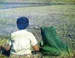
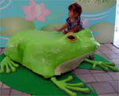
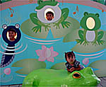
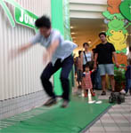
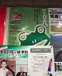

|
 水族館カエル展に行く！【福岡発げこげこ大王直筆】福岡市のマリンワールドてやっている、『カエル展』に、福岡カエル展実行委員会のスタッフが、集団ででかけましたああああ。
 まず、ポスターがいいよね。『君らのお父さんが子供のころカエルは友達だった』というコピーとともに、少年とカエルが田圃で並んでこしかけているという姿だ。カエルがお父さんを丸のみしてたら、さらに良かったなあ。
 入り口には、巨大なカエルが出迎えていて、子供とかはカエルの背中に乗れるようになっていた。大人用もほしいぜえええ。巨大かえるの口の中に入れるやつとかもあったらいいなあ。お子さまは、狂喜してましたねえ。顔出し記念撮影用とかもあります。 カエルのジャンプと競争してみよう、という場所があったので、さっそく蓮カエル同志が、カエルに対抗して、カエルな姿勢からじゃあああんぷしました。世界陸上の公式競技にしてほしいぞ。で、結果はみごとにカエルに及ばずでしたが、人類最高記録をマークしたようです（追い風参考）
 そうして、カエル土産も充実していて、蓮カエルさんは、カエルポシェットにカエルヘアバンド。カエル口先、カエルボールペンなどを試着して、『会社に着てゆくんだ』と、閉店時間ぎりぎりまで買い物をしていました。会社や取引先などで、発見したら、『すてきなカエルぶりですねー』って声をかけてくださいね。
来年からカエル展が常設になるといいなあ。というか、カエル専用のカエル属館とかつくってくれえええ。イルカショーみたいに、カエルショーとかもやってほしいぞおお。全国の入場者が減って来ているなんとか館とかあったら、全部カエル館にしようではないかあああ。
 社内でカエルポスター発見！【日本発やぎ同志記者】会社の入ってるビルに、色々とポスターが掲示してあるゾーンがあるのですが、なんと、こんなポスターが。残念な事に、他のポスターが上に来ててカエルが一寸隠れておりますが、 紛れもなくカエルですっ！！ あと、余談ですが数ヶ月前のＪＡＬ機内誌（国内線）に、カエルグッズの特集がありました。
日本の民間航空機はカエル塗装に！【全国かえる奉賛会】おおおお、さり気なく、一番上にしておきましょう。日本航空か全日空のどちらかは、機体を緑色もしくは、トノサマカエル色の迷彩塗装にしてほしいぞおお。そして、尾翼にはカエルのマークをつけよう。
全日空は、社名が縁起が悪いと、ANAにしたらしいけど、穴なんて、さらにとんでもないぞ。今からでも遅くないから、蛙日空KELにしろおお。機内で配る新聞は、全社かえる新聞にしてくれえええ。

カエルサボテン最終案内！！【ケロ天市場】現在発売中の１０匹を最後に、カエルサボテンは販売を終えます。にんまり顔とにっこり顔があるんで、どちらでも選べます。
|
メールマガジン登録
メールマガジン解除
Powered by


かえる古新聞過去に取り上げた記事を見出し付きで一覧したい人は、ここをクリック◆創刊号を見る◆先週号を見る◆話題の号を見る◆かえる新聞の昔を読む
|
私も入っています。。全国かえる奉賛会
大王様に会うには、このバナーをクリック。ずっと奥に写真館があるぞ。全国かえる奉賛会に入会するには、自分のホームページのどこかに、下の部分を追加するとバナーがリンク付きで表示されるぞ。どんどん入会しましょー |


|